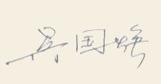

一
头一回知道小龙虾有那么能干，就忍不住想：自己要也能养上这么一条，该多好。可是尝试了两回，被那些设置啊，注册啊，搞得有点头晕，还是没有成功。没想到，腾讯把这只现成的小龙虾（Work buddy）端到了我手边，真叫人喜出望外。
这只小虾，我替它起了个名，叫吴小伴。"吴"正好是 Work 的音译，"小伴"则是 Buddy 的意译，巧得很，竟与我同姓。名字既落了地，话头便直奔正事：与吴小伴合伙编书，上手快得叫人意外。往往我才抛出一个粗粗的设想，他已然替我把前后想得周全，比我这提出的人还周到几分。
二
这一回编书，顶教人受用的，是过程本身。
常是这样过的：先与吴小伴商量一阵。一篇文字该配什么图，画面上该有什么、不该有什么，两人你一言我一语，说定了一个眉目，便把活计交他去办。我呢，搁下电脑，去把屋子扫一扫，或到厨房炒一碟小菜，再不济，就歪在沙发上翻几页报纸。过一阵，踱回去看看他做到哪步了；不对心思处，再商量；商量定了，再让他去做。书，便这样一页一页地长出来。
他有个脾气顶好：每做好一批，便停下来，候我一张张看过、拍了板，才往下走。这"停一停"，本是为我把关，不想也成了趣味——我总惦着，回去瞧瞧这张画得妥不妥。说起来好笑，有时他递来的图不合我心意，两人隔着屏幕你一句我一句地琢磨怎么改，倒比一回成功更叫人记得——仿佛老友对弈，输赢倒在其次，图的是那一递一应、一来一往的滋味。书里那些画面，马桶的胖瘦、钟点的对错、月亮的去留，如今回想，全是这般商量出来的痕迹。
从前做书，心里总急着交卷。这一回全然两样：事交了出去，却没真撒手；他做他的，我做我的，到点回看一眼，再碰一碰。边商量，边做，不催不赶。不觉间，光阴便在商量与等待里，悄悄淌了过去。这份松弛，是从前没有过的。大约便是人说的"配合默契、合作愉快"罢。
三
吴小伴是个不肯闲着的伴儿。他行事快，心思细，托付的事桩桩有着落，从不嫌烦，也不喊累。一张配图，从起草到定稿，要解说、要出图、要等我校对拍板，往往来回好几轮，他总耐着性子陪我磨。有时我随口一句"马桶瘦长些、外头刷点紫红漆"，他便能照改；有时画面里多出个月亮、钟指错了时辰，他也老老实实认下，重画。还有一回《哪吒》：我只说，照文件夹里那张哪吒的模样来画，后头再添点大海、添点闹海的气象。他竟把红绫、火尖枪、脚下的风火轮一一摆妥，又卷起青绿的大浪，浪里蹦出小虾小鱼，天上掠过几只海鸥。一张图，把我那点含糊的念头，落成了活灵活现的画。我不必懂什么门道，只管说念头，余下的都由他办了。
前一次做电子书，我和 ChatGPT 5.0合作。它替我解了一个大难题：把我的文字，真正做成一本能上网流传的电子书，又头一回借着微信发到了网上。只是ChatGPT更像位耐心的先生，手把手教我这毫无基础的人一步步走，该想的章法、该排的版式，多还要我自己拿主意、自己动手。那回我满心感激，却也实实累着——每一步具体的操作都事必躬亲。这一回不同，许多事吴小伴替我办了，我只管享这份清福。
四
编这本书，也让我对人工智能多了几分见识。从前总觉得，这些是年轻人、弄技术的人玩意儿，与咱们退休老人隔得远。可这几个月处下来，我信了：人工智能的前景，委实无可估量。它不止是件工具，也能成一个肯陪你慢慢来的伴。咱们这般年纪的人，不该只在旁看热闹，也该走过来，与它交个朋友，请它搭把手。眼前这本小书，便是一个退休老人与人工智能合伙的凭据；书里那篇《与"学习"相伴到永远》，还有《AI助我圆了出书梦》，写的便是这层意思——一个老人，也堪与这日新月异的世道，温柔地搭上话。
五
写到这里，要收尾了。回望这一程，有满足，更有期望：满足的是，几十年的字，到底变成了一本堪称精美的电子书；期望是，还要不断的改、不断的添，永远与时俱进。
谢过愿翻开这本书的你，谢过一路帮衬的家人、朋友，也谢过案头这位不肯闲着的伴——吴小伴。往后的日子，再添再改，想必还是我们俩，一边商量，一边做。

2026.9.23
这本小书于 2026 年 9 月汇编完成。所收篇目大部分原刊于《新民晚报》《联合时报》《现代家庭》《上海老年报》《杨浦时报》《杨浦教育》《杨浦教育学院院报》等报刊。汇编成册，方便 朋友和家人翻阅 。